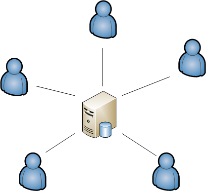

DfaSys2
Version Control and Build Process
The Plan
- Discussion
- Song and Dance Number
- Quick Demo of Dimensional
- Next Steps
Goal 1:
Drive down the cost / fear of change.
Goal 2:
Guarantee all changes are checked into version control before release.
We need to make a change...

Problems
Cost of Change

DBAs: Your scripts don't work!

Slow Script Feedback
The Anti-Pattern
Centralized DB Development

SET @NumberOfAutomatedTest = 0
We can make it better...

Solutions
Fast Script Feedback
Not more than 5 min.
Support for Automated Tests
Cost of Change

Other benefits...
- Automatically creates ZIP files for CM: Implementation and rollback scripts.
- Modifies scripts to work on different environments. (Changes "-DEV" to "-STG")
- Supports untouched deployments.
- Runs automated tests on every check-in.
- Will never receive broken scripts.
- Can be notified of changes to DBs while they are being made (NOT right before deployment).
- Can restore a database structure from any point in the past.